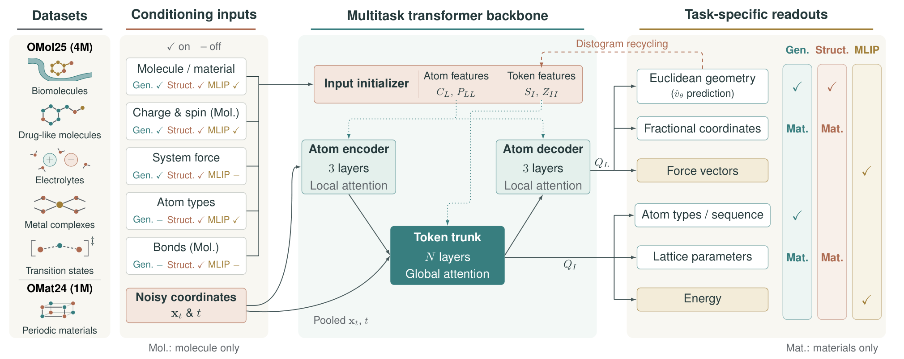
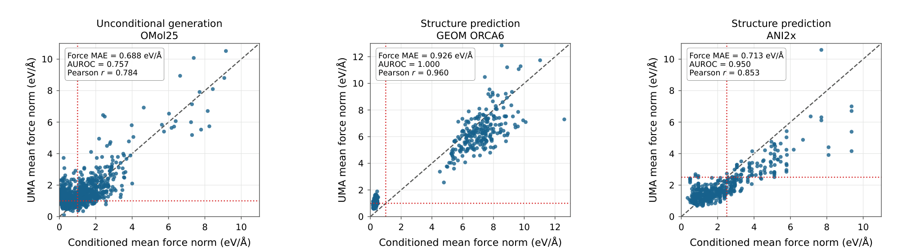
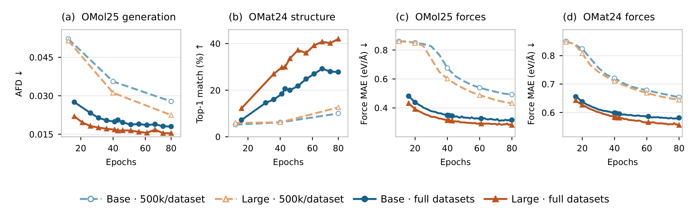
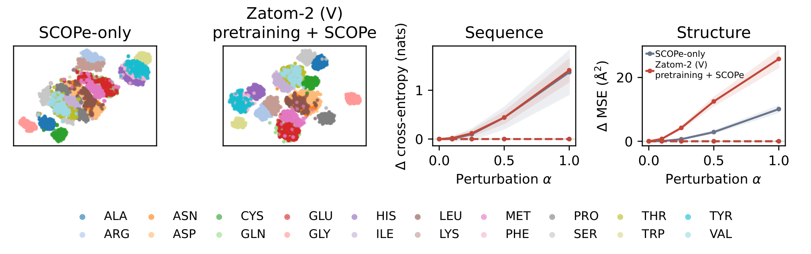

Zatom-2：把分子与材料的原子知识预训练成跨领域生成能力
论文原文 ↗Miruna Cretu、Alex Abrudan 等，Zatom-2: Multitask Pretraining on Atomistic Data for Generative Modeling across Domains，arXiv，2026。官方页面｜原始 PDF
分子、无机晶体和蛋白质都是原子在三维空间中的组合，但生成模型常按学科分别设计：分子以原子为单位，晶体要处理周期晶胞，蛋白质又常以残基为单位。与此同时，量子化学数据库已积累大量结构、能量和力标签，蛋白生成等任务的可用训练数据却相对有限。怎样让前者帮助后者，是 Zatom-2 的出发点。
作者用 OMol25 和 OMat24 中约 500 万个结构预训练统一模型，将生成、结构预测与能量和力预测结合起来。模型既学习“原子可以怎样排列”，也学习“这样的排列对应怎样的物理响应”，再把共享表示迁移到少数据蛋白生成。
方法怎样做：统一几何处理，让生成与预测共同塑造表示
预训练包含约 400 万个分子结构和 100 万个材料结构，覆盖有机分子、金属配合物、电解质，以及扰动、弛豫和动力学构型。数据既有接近平衡的结构，也有受力较大的结构，为学习不同松弛程度提供条件。
统一输入采用两种分组方式。分子和材料使用 atom1：每个原子对应一个网络处理单元，即 token。蛋白质使用 atom14：每个残基提供最多 14 个原子坐标槽，未使用的位置补齐，一个残基对应一个 token。网络由此能够在原子尺度处理局部几何，再在 token 尺度处理体系整体联系。
以分子生成为例，训练时先取真实坐标，再采样一份高斯随机坐标，按生成进度将二者混合。条件流匹配让网络学习中间构型怎样继续变化，才能走向真实结构：输出的“速度”描述生成过程中的坐标更新方向。使用时从随机坐标开始，多次调用网络并更新位置，逐步得到完整几何，接近终点时再从表示读出元素身份。
每次调用都经过同一个多尺度网络。原子编码器通过局部注意力提取邻近关系；原子特征汇入 token，全局 Transformer 让各 token 交换信息；之后 token 特征传回原子，解码器输出坐标更新。晶体分支同时处理分数坐标和晶胞参数。网络还把当前估计的清晰结构转成距离分箱图，作为下一次计算的几何反馈，使后续更新能参考已经形成的整体形状。

原图 1｜从左到右是数据和任务条件、原子编码—全局 token 处理—原子解码，以及各任务的输出。共享主干根据任务接收不同的已知信息，并接受相应监督。
三类任务各自提供学习信号。生成任务从噪声恢复结构并推断元素；结构预测任务先给定组成，集中学习几何；能量和力预测任务输入干净坐标与已知元素，学习电子结构计算给出的响应。训练按约三分之一比例混合任务，使同一个主干同时受到生成与物理预测的约束。
Zatom-2 还允许指定生成结构的受力程度。作者取每个原子力向量的模长，再对体系平均，把这个标量编码为条件。目标平均力较低，对应更松弛的结构；较高则对应更受扰动的状态。生成后，用独立原子势 UMA-S-1p2 计算候选的平均力，与输入条件比较，形成“指定受力程度—生成结构—测算受力”的评价链。
主要结果：分布保真、受力控制与少数据跨领域迁移
联合训练改善分子分布，并能控制高、低受力状态
与 Zatom-1 相比，最终大模型的原子特征分布距离 AFD 从 0.047 降到 0.016。AFD 将生成样本与参考样本送入同一个固定几何编码器，再比较两组特征分布；数值降低表示整批生成结构在表示空间中更接近参考。生成样本由 UMA 估计的平均力模长也从约 29.5 降至 1.27 eV/Å。
指定不同目标平均力时，生成结构的测算受力随之变化。OMol25 分子生成以及 GEOM ORCA6、ANI2x 结构预测中，都能区分低受力与高受力状态。这使生成目标从“形成某类结构”进一步扩展到“形成所需松弛程度的结构”。

原图 2｜横轴为指定的平均力，纵轴为 UMA 测算值。对角线表示数值吻合，红线区分高低受力区域；散点随条件移动，展示生成状态的可控性。
在标准分子和材料生成任务上，作者也取得有竞争力的表现。专门训练的 GEOM-Drugs 模型化学有效率为 96.9%；MP20 原始晶体输出的 MetaSUN 产率为 4.92%，高于所列比较模型。MetaSUN 将结构有效性、独特性、新颖性及势模型预测的亚稳能量条件结合起来，检验材料生成候选的整体质量。
数据覆盖与模型规模共同改善多任务学习
作者将每域 50 万样本与约 500 万样本的训练设置比较，再分别使用基础模型和大模型。扩大数据覆盖持续改善分子分布距离、材料结构匹配率和力预测，增大模型容量带来进一步收益，材料结构预测尤其明显。生成与预测共享主干，因此更多原子环境可以同时帮助多个输出任务。

原图 3｜实线和虚线分别使用较大与较小训练集，圆点和三角表示不同模型容量。分布距离及力误差越低越好，材料结构匹配率越高越好。
物理监督帮助少数据蛋白生成，并提高长度外推表现
跨领域迁移使用 SCOPe 中 2000 个蛋白结构域微调，训练长度不超过 128 个残基，再生成 129–256 残基的较长骨架。候选如何评分？每个骨架由 SolubleMPNN 设计八条序列，再用 ESMFold2 预测其折叠；只要至少一条序列的折叠结构与目标骨架的 Cα 坐标偏差低于 1.5 Å，就计为可设计。这样，骨架生成接到了序列设计和折叠预测。
较长骨架的可设计率，从未经预训练的 67.81% 提高到 74.80%。只做生成与结构预测预训练的模型约为 68.00%，加入能量和力监督后才出现主要提升。可设计结构的不同折叠簇数量也从约 471 增至 619，表明改进伴随着更丰富的折叠形状。

原图 4｜左侧比较预训练前后的残基特征组织，右侧观察扰动一个残基特征后，其自身及其他残基的解码变化。预训练表示具有更清晰的分组和局部对应关系。
表示分析为迁移结果提供了直观补充：预训练后，残基特征按氨基酸类别形成更清晰的组织；扰动一个残基的特征时，主要变化集中在该残基的序列和结构输出。原子级任务学到的表示，因而能够适应残基分组并服务更大体系生成。
对领域的贡献
Zatom-2 将数据丰富的分子和材料领域，与数据较少的蛋白生成接在同一个多尺度架构中。atom1 和 atom14 统一了不同粒度的几何处理，条件流匹配负责生成，能量和力任务则为共享表示注入物理响应信息。
这项工作给出一条具体的跨领域预训练路线：同时学习结构分布和结构对应的响应，再用少量目标领域数据调整模型。分子分布改善、受力状态控制以及蛋白长度外推的提升，共同显示了这种生成—预测联合学习的价值。
附：完整原始摘要中文翻译
统一的原子级建模有望连接数据丰富的化学领域与数据稀缺的生物学情境，从而加速化学、材料科学和生物学中的发现。然而，现有原子级生成建模方法仍高度专用于不同科学学科（化学与生物学），或者没有同时利用大量有机（分子）和无机（材料）数据进行通用预训练。为此，我们提出 Zatom-2，一种在 OMol25 和 OMat24 电子结构数据集中约 500 万个结构上预训练的原子级生成模型。Zatom-2 采用多尺度 Transformer 架构，并与条件流匹配相结合，支持力条件控制，以及生成、结构预测、分子和材料能量与力预测等基础预训练任务。在实证研究中，Zatom-2 的分子分布保真度优于 Zatom-1，并在现有分子和材料生成基准上取得较强表现。Zatom-2 展示了在低受力和高受力状态之间控制样本生成的能力，并通过联合生成—预测预训练与迁移学习，改善低数据条件下的蛋白质生成：在用 2,000 个蛋白质结构域微调后，长度外推情境中的蛋白骨架可设计率由未经预训练时的 67.8% 提升到 74.8%。